Российский университет дружбы народов им. П. Лумумбы
Цель работы
Приобретение практических навыков взаимодействия пользователя с
системой посредством командной строки.
Задание
Определите полное имя вашего домашнего каталога. Далее относительно
этого ката- лога будут выполняться последующие упражнения.
Выполните следующие действия: 2.1. Перейдите в каталог /tmp. 2.2.
Выведите на экран содержимое каталога /tmp. Для этого используйте
команду ls с различными опциями. Поясните разницу в выводимой на экран
информации. 2.3. Определите, есть ли в каталоге /var/spool подкаталог с
именем cron? 2.4. Перейдите в Ваш домашний каталог и выведите на экран
его содержимое. Опре- делите, кто является владельцем файлов и
подкаталогов?
Выполните следующие действия: 3.1. В домашнем каталоге создайте
новый каталог с именем newdir. 3.2. В каталоге ~/newdir создайте новый
каталог с именем morefun. 3.3. В домашнем каталоге создайте одной
командой три новых каталога с именами letters, memos, misk. Затем
удалите эти каталоги одной командой. 3.4. Попробуйте удалить ранее
созданный каталог ~/newdir командой rm. Проверьте, был ли каталог
удалён. 3.5. Удалите каталог ~/newdir/morefun из домашнего каталога.
Проверьте, был ли каталог удалён.
С помощью команды man определите, какую опцию команды ls нужно
использо- вать для просмотра содержимое не только указанного каталога,
но и подкаталогов, входящих в него.
С помощью команды man определите набор опций команды ls, позволяющий
отсорти- ровать по времени последнего изменения выводимый список
содержимого каталога с развёрнутым описанием файлов.
Используйте команду man для просмотра описания следующих команд: cd,
pwd, mkdir, rmdir, rm. Поясните основные опции этих команд.
Используя информацию, полученную при помощи команды history,
выполните мо- дификацию и исполнение нескольких команд из буфера
команд.
Выполнение лабораторной
работы
Узнаю полное имя домашнего каталога.
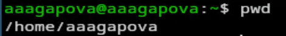
Имя домашнего каталога
Перехожу в подкаталог tmp.
Переход в каталог
Просматриваю содержимое каталога tmp.
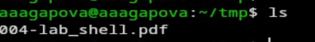
Просмотр каталога
Использую команду ls с разными опциями.
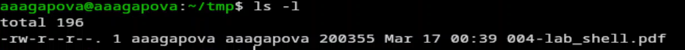
Дополнительная информация
Данная опция покажет скрытые файлы в каталоге.
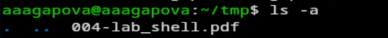
Скрытые файлы
Перехожу в каталог /var/spool. Ввожу необходимую команду, вижу что
подкаталог с именем cron есть.
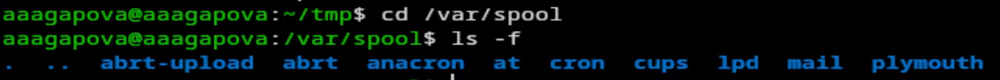
Поиск подкаталога
Перехожу в домашний каталог и вывожу на экран его содержимое.
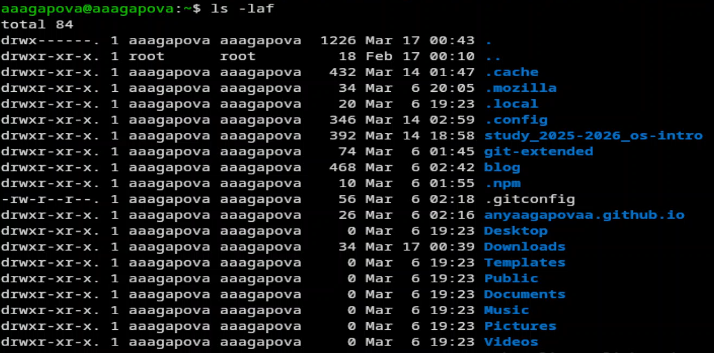
Определение владельца
В домашнем каталоге создаю новый каталог с именем newdir. Проверяю,
что каталог создался.
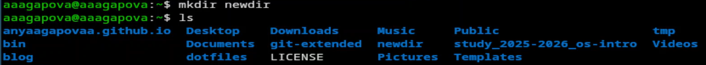
Создание нового каталога
В каталоге ~/newdir создаю новый каталог с именем morefun. Проверяю,
что каталог создался.
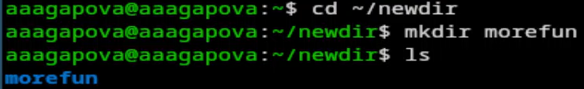
Создание каталога
В домашнем каталоге создаю одной командой три новых каталога с
именами letters, memos, misk.
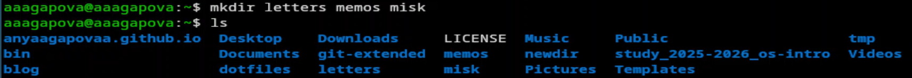
создание каталогов
Удаляю эти каталоги одной командой. Проверяю, что они
удалились.
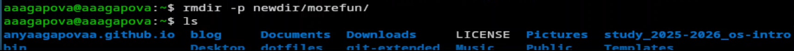
удаление каталогов
Пробую удалить ранее созданный каталог ~/newdir командой rm.
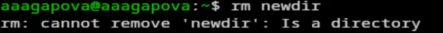
Удаление каталогов
Удаляю каталог ~/newdir/morefun из домашнего каталога. Проверяю, что
каталог был удалён.
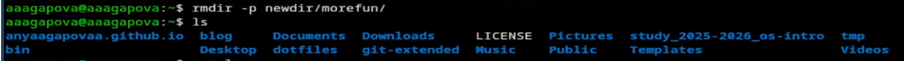
Удаление каталога
С помощью команды man определяю, какую опцию команды ls нужно
использовать для просмотра содержимое не только указанного каталога, но
и подкаталогов, входящих в него.
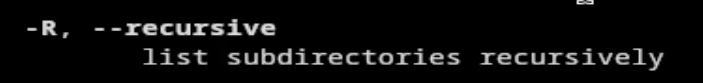
Определение опции
С помощью команды man определяю набор опций команды ls, позволяющий
отсортировать по времени последнего изменения выводимый список
содержимого каталога с развёрнутым описанием файлов.
Определение опции
Использую команду man для просмотра описания cd.
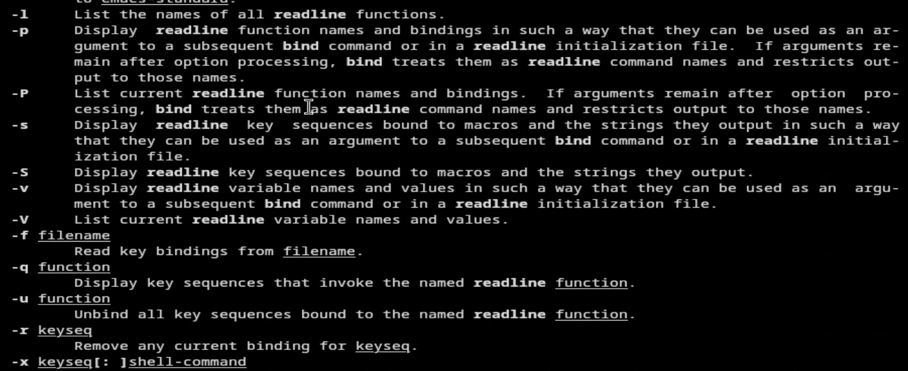
Просмотр cd
Использую команду man для просмотра описания pwd.
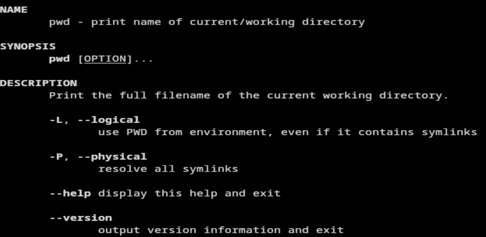
Просмотр pwd
Использую команду man для просмотра описания mkdir.
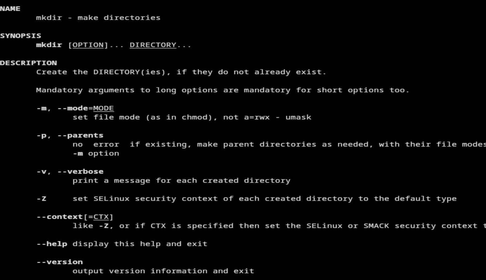
Просмотр mkdir
Использую команду man для просмотра описания rmdir.
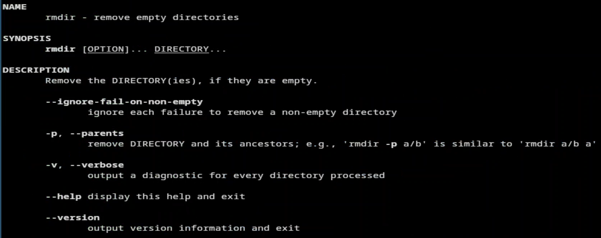
Просмотр rmdir
Использую команду man для просмотра описания rm.
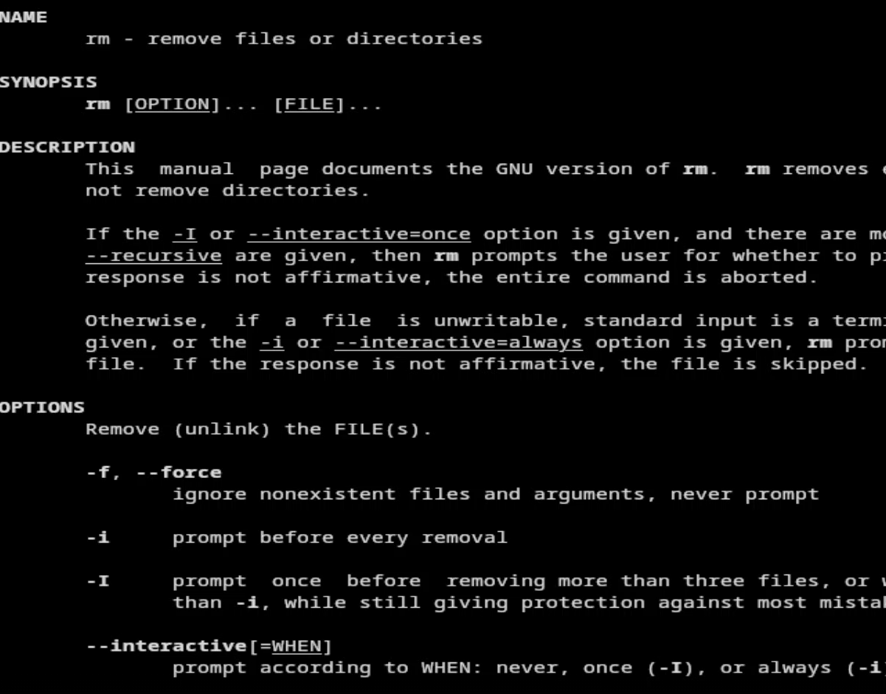
Просмотр rm
Используя информацию, полученную при помощи команды history,
выполняю модификацию и исполнение нескольких команд из буфера
команд.
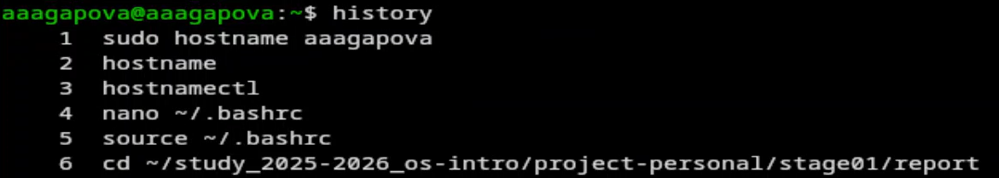
Просмотр информации
Модифицирую команду.
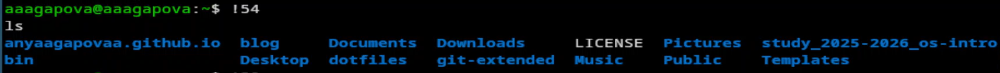
Модификация команды
Модифицирую команду.
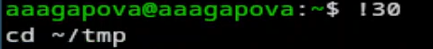
Модификация команды
Модифицирую команду.
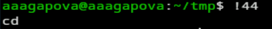
Модификация команды
Выводы
Я приобрела практические навыки взаимодействия пользователя с
системой посредством командной строки.